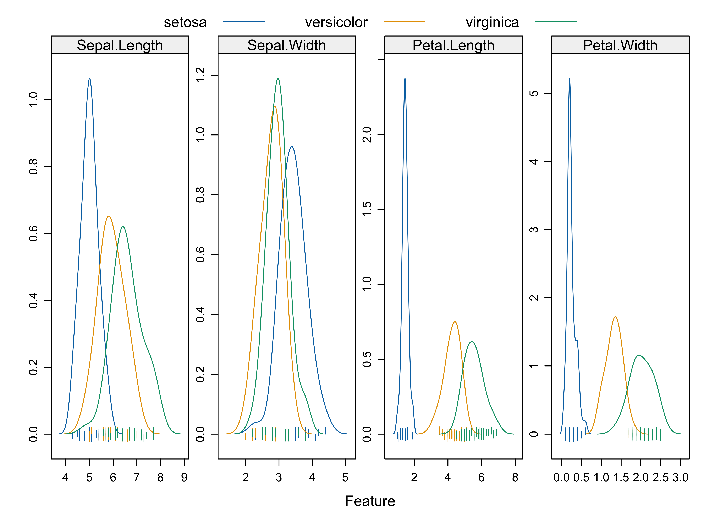
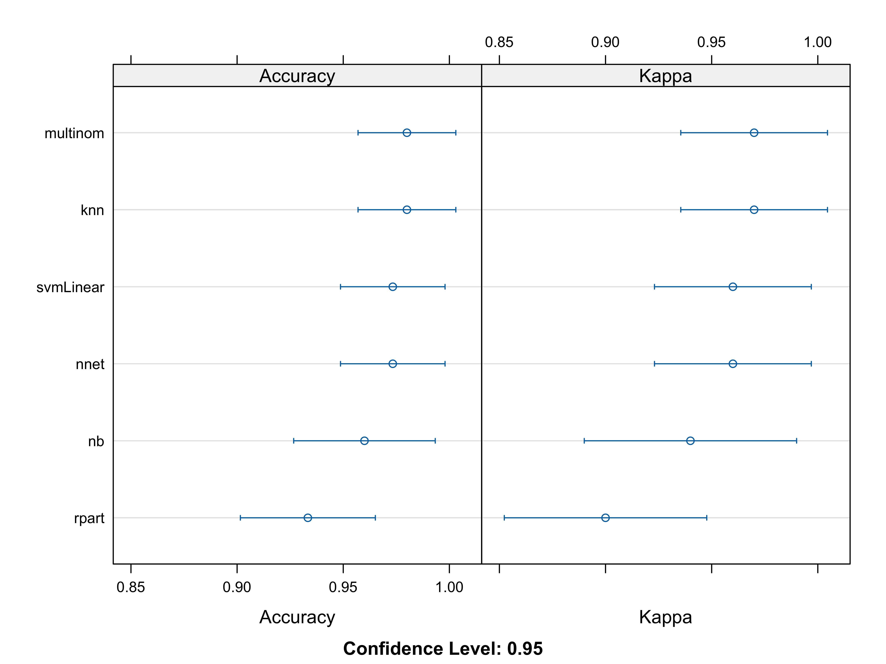
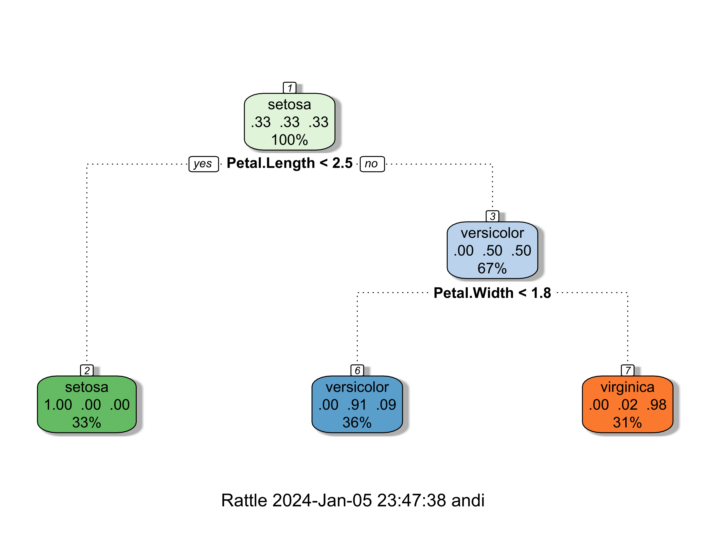

library(tidyverse)
library(caret)
library(ggplot2)
library(rattle)First steps with iris data set
Introduction
TBA
Load libraries
Load iris data set
data(iris)
head(iris) Sepal.Length Sepal.Width Petal.Length Petal.Width Species
1 5.1 3.5 1.4 0.2 setosa
2 4.9 3.0 1.4 0.2 setosa
3 4.7 3.2 1.3 0.2 setosa
4 4.6 3.1 1.5 0.2 setosa
5 5.0 3.6 1.4 0.2 setosa
6 5.4 3.9 1.7 0.4 setosaVisualize features
featurePlot(
x = iris[, 1:4],
y = iris$Species,
plot = "pairs",
## Add a key at the top
auto.key = list(columns = 3))featurePlot(
x = iris[, 1:4],
y = iris$Species,
plot = "density",
## Pass in options to xyplot() to
## make it prettier
scales = list(
x = list(relation="free"),
y = list(relation="free")),
adjust = 1.5,
pch = "|",
layout = c(4, 1),
auto.key = list(columns = 3))
Train model
For model avilidation we use a 10-fold cross validation approach. trainControl setup all computational nuances that we need to train the model.
Species ~ . means that we use all features to predict the target variable. In our case, this would be equal to Species ~ Sepal.Length + Sepal.Width + Petal.Length + Petal.Width.
Since we have categorical target values (the three different species), we should use models for classification tasks.
We use the following models: - multinom: Multinomial Logistic Regression - rpart: Decision Tree - nnet: Neural Network - svmLinear: Support Vector Machine - knn: K-Nearest Neighbors - nb: Naive Bayes
metric <- "Accuracy"
K_FOLD_CROSS_VALIDATION <- 'cv'
train_control <- trainControl(method = K_FOLD_CROSS_VALIDATION, number = 10)
methods <- c('multinom', 'rpart', 'nnet', 'svmLinear', 'knn', 'nb')
fits <- list()
for (method in methods) {
m <- train(Species ~ ., data = iris, method = method, metric=metric, trControl = train_control)
fits[[method]] <- m
}Compare models
res <- resamples(fits)
summary(res)
Call:
summary.resamples(object = res)
Models: multinom, rpart, nnet, svmLinear, knn, nb
Number of resamples: 10
Accuracy
Min. 1st Qu. Median Mean 3rd Qu. Max. NA's
multinom 0.8666667 0.9500000 1.0000000 0.9733333 1 1 0
rpart 0.8000000 0.8833333 0.9333333 0.9333333 1 1 0
nnet 0.9333333 0.9333333 1.0000000 0.9733333 1 1 0
svmLinear 0.8666667 0.9333333 1.0000000 0.9600000 1 1 0
knn 0.8000000 0.9500000 1.0000000 0.9666667 1 1 0
nb 0.7333333 0.9500000 1.0000000 0.9533333 1 1 0
Kappa
Min. 1st Qu. Median Mean 3rd Qu. Max. NA's
multinom 0.8 0.925 1.0 0.96 1 1 0
rpart 0.7 0.825 0.9 0.90 1 1 0
nnet 0.9 0.900 1.0 0.96 1 1 0
svmLinear 0.8 0.900 1.0 0.94 1 1 0
knn 0.7 0.925 1.0 0.95 1 1 0
nb 0.6 0.925 1.0 0.93 1 1 0dotplot(res)
The figure above shows the accuracy of the different models. The Kappa value represent the agreement between the predicted and the observed values.
Visualize decision tree
The decision tree can be visualized very easily, which allows an understanding of the underlying decision process.
fancyRpartPlot(fits$rpart$finalModel)